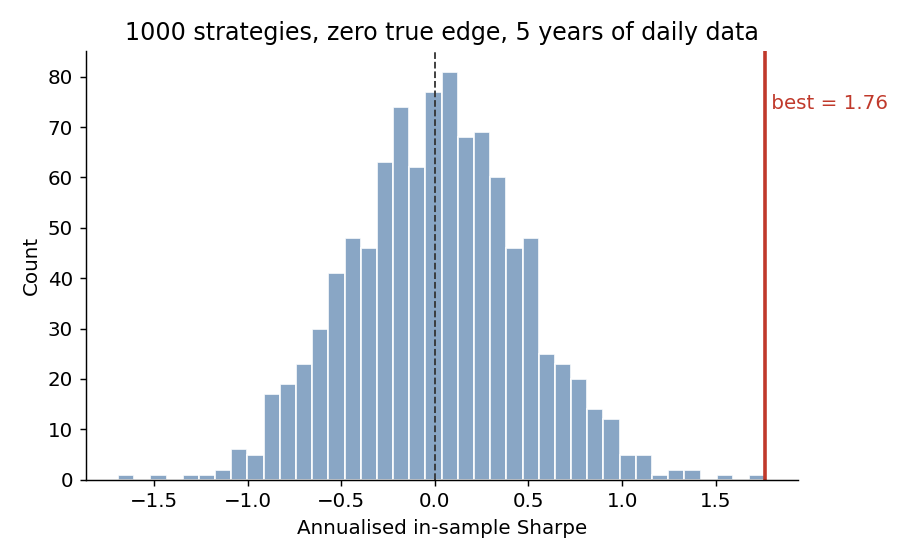
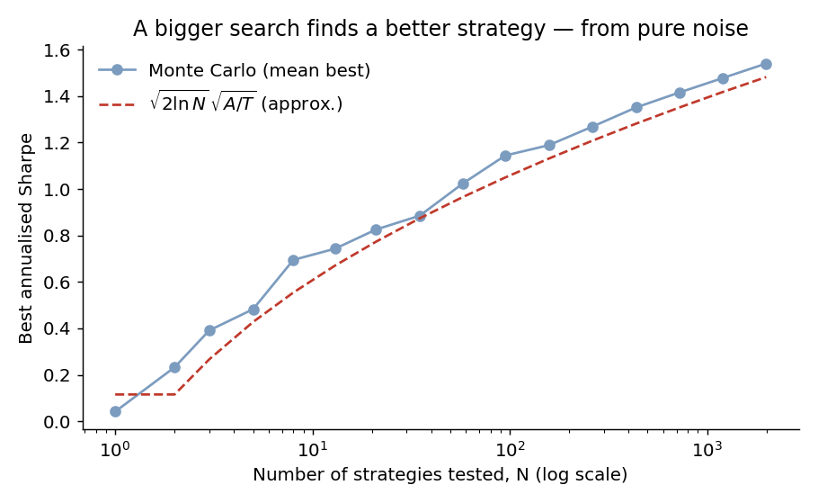

Quantitative researcher working on systematic strategies, risk, and market microstructure. This site is my open lab notebook — the ideas, equations, and experiments I'm working through on the way to a PhD. I care most about work that is reproducible, honestly reported, and grounded in the literature.
Research Reading notes About & interestsIf you search over enough strategies, you are guaranteed to find one with an excellent in-sample Sharpe ratio — even when none of them has any real edge — because you are reporting the maximum of a large number of noisy estimates, and the maximum of noise is not zero.
Give every one of \(N\) candidate strategies zero true edge: daily returns i.i.d. \(\mathcal{N}(0,\sigma^2)\) with mean exactly zero. Compute each strategy's annualised in-sample Sharpe and keep the best — exactly what a naive strategy search does.
import numpy as np
RNG = np.random.default_rng(42)
A, T = 252, 1260 # 252 trading days/yr; T = 5 years of daily data
def ann_sharpe(returns): # returns shape (T, N) -> (N,)
mu = returns.mean(axis=0); sd = returns.std(axis=0, ddof=1)
return np.sqrt(A) * mu / sd
N = 1000
sr = ann_sharpe(RNG.standard_normal((T, N))) # every strategy has TRUE Sharpe 0
print(sr.mean(), sr.max()) # ~0.01, 1.76The average strategy sits at ~0, as it should. But the best of the thousand posts an annualised Sharpe of 1.76 over a five-year backtest — purely from sampling noise.

Under the null of zero edge, the estimated Sharpe over \(T\) i.i.d. observations is approximately normal,
$$\widehat{SR}\sim\mathcal{N}\!\left(0,\tfrac{1}{T}\right)\ \text{(per-period)},\qquad \widehat{SR}_{\text{ann}}\sim\mathcal{N}\!\left(0,\tfrac{A}{T}\right),$$
so the standard error of an annualised Sharpe is \(\sqrt{A/T}\approx 0.45\) for \(T=1260\). The expected maximum of \(N\) i.i.d. standard normals grows like \(\sqrt{2\ln N}\), so the best spurious Sharpe scales as
$$\mathbb{E}\!\left[\max_{i\le N}\widehat{SR}^{(i)}_{\text{ann}}\right]\approx\sqrt{\tfrac{A}{T}}\,\sqrt{2\ln N}.$$

| Strategies tested N | Expected best annualised Sharpe |
|---|---|
| 10 | ~0.6 |
| 100 | ~1.1 |
| 1,000 | ~1.4 |
| 10,000 | ~1.7 |
Judge an observed Sharpe against the best you'd expect under the null given how many things you tried. Bailey & López de Prado formalise this via the expected maximum Sharpe across \(N\) trials,
$$\mathbb{E}\!\left[\max_n SR\right]\approx\sqrt{\operatorname{Var}(SR_n)}\Big[(1-\gamma)\,\Phi^{-1}\!\left(1-\tfrac1N\right)+\gamma\,\Phi^{-1}\!\left(1-\tfrac1{Ne}\right)\Big],$$
with \(\gamma\approx0.5772\) the Euler–Mascheroni constant. In practice: count every trial honestly (including discarded ones), hold out untouched data, prefer fewer hypothesis-driven tests, and report the deflated number.
Takeaway. Stocks with high idiosyncratic volatility earn abnormally low average returns — the opposite of a risk-based story, and robust enough to launch a decade of follow-up work.
Key numbers. The high-minus-low idio-vol quintile spread is about −1.06% per month, staying large (~−1.3%/month) after FF3 adjustment and surviving controls for size, B/M, momentum, and liquidity.
What I'd push on. Measurement fragility (Bali & Cakici 2008: weighting/breakpoints matter); realised vs expected idio-vol (Fu 2009); lottery demand / the MAX effect (Bali–Cakici–Whitelaw 2011); arbitrage asymmetry (Stambaugh–Yu–Yuan 2015). The replication I'd run reports the full robustness grid, not the best cell — the same multiple-testing trap as the piece above.
I build systematic trading models and work through the academic literature, testing ideas of my own. I'm preparing to apply for a PhD in [TARGET FIELD], and this site keeps the trail of that work in the open.
How I work: reproducibility first, report the misses, cite the literature. Contact: davidolivermaguire@gmail.com.